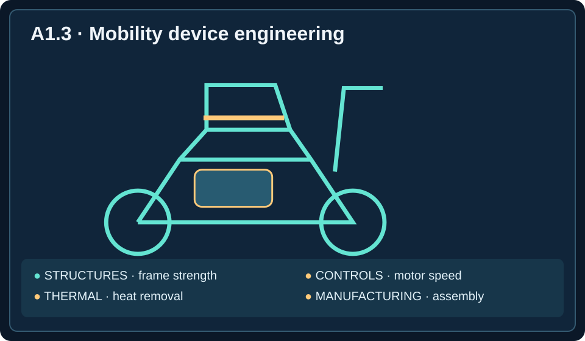

Semester objective A-O1: Explain mechanical engineering roles, ethical obligations, and design considerations.
Unit essential question: How do mechanical engineers use scientific knowledge to develop useful, safe, and reliable technology?
Learning target: Compare specialties, responsibilities, and applications.
Objectives: Distinguish major specialties; match tasks to appropriate engineers; explain collaboration; compare design, manufacturing, testing, and reliability responsibilities.
🎧 Listen to the Complete Lesson
Play the full narration while following along with the reading. Pause or replay whenever you like.
One Field, Many Careers
Imagine a company developing a new electric wheelchair. The wheelchair must safely support a person, move smoothly, respond to its controls, operate without overheating, and withstand years of everyday use. It must also be manufactured at a price that makes it accessible to customers.
Could one engineer design every part of this product? An individual engineer might understand many necessary principles, but developing a sophisticated product generally requires a team of specialists. One engineer might calculate whether the frame is strong enough. Another might develop the motor and speed-control system. Others might plan assembly, test performance, and investigate ways to prevent breakdowns.
These professionals work within different engineering specializations, areas of engineering focused on particular technical problems, methods, or applications. Mechanical engineering is broad because so many technologies involve physical forces, motion, energy, materials, and manufacturing.
An important distinction is that careers are not defined only by the product being developed. An automotive company may employ structural, thermal, controls, manufacturing, and test engineers. All work in the automotive industry, but their technical responsibilities differ.
Mechanical Design Engineering
A mechanical design engineer develops physical components and mechanisms to satisfy specific technical requirements. Design engineers determine how a machine should work, how its parts fit together, and how it will accomplish its task.
Consider an automated warehouse lift that must raise heavy packages while fitting into a limited space. A design engineer might develop lifting arms, select a drive mechanism, determine dimensions, and revise the design after testing. The engineer must consider forces, motion, materials, space, cost, and safety. A mechanism that moves correctly but breaks under normal loading is unacceptable; so is one too large for its installation space.
Design engineers frequently use computer-aided design (CAD) software to create digital models. These models help engineers visualize assemblies, check dimensions, detect interference between components, and communicate design information. Designing a gearbox, robotic gripper, vehicle suspension, or medical device involves the same central responsibility: developing a physical solution that meets measurable requirements.

Structural and Materials Engineering
Many products must carry loads without breaking or bending excessively. A structural analysis engineer studies how forces affect components and assemblies. Suppose a manufacturer wants to make a wheelchair frame lighter. Reducing material might improve portability, but it could also cause the frame to deform or crack.
The structural engineer evaluates the forces acting on the frame, identifies heavily loaded regions, and determines whether the geometry can support the required loads. Stress describes internal force distributed over an area; deformation is a change in shape or dimensions. A frame can remain intact yet deform enough to be unsuitable.
A materials engineer focuses on the properties and behavior of metals, plastics, composites, and ceramics. Materials specialists might investigate why a component cracked, compare alloys, or recommend a material that better withstands corrosion, temperature, or repeated loading. Structural and materials engineers often collaborate: one defines the mechanical demands, while the other helps identify suitable materials.
Thermal Engineering
Motors, batteries, engines, electronics, and industrial machines may generate significant heat. Excessive temperatures can reduce performance, damage components, and create safety hazards. A thermal engineer specializes in heat generation, temperature control, and heat transfer—the movement of thermal energy because of a temperature difference.
An electric vehicle battery generates heat during charging and operation. A thermal engineer may evaluate cooling channels, heat-transfer materials, airflow, and temperature measurements to keep it within acceptable limits. Thermal engineers also work with heating, ventilation, and air conditioning (HVAC) systems, refrigeration equipment, power plants, and electronics cooling.
If an electronic enclosure overheats, a thermal engineer might estimate how much heat must be removed and investigate whether ventilation or another cooling approach can maintain an acceptable temperature. The objective is not simply to produce heat, but to control where thermal energy goes.
Fluid Systems Engineering
Water pumps, ventilation fans, hydraulic machines, and piping networks all involve moving fluids. A fluid systems engineer studies and designs equipment that controls the movement of liquids and gases. In engineering, a fluid is any substance that flows, including both liquids and gases.
A factory might need to circulate cooling water through pipes. A fluid systems engineer can determine the required flow rate, select pumps, evaluate pipe sizes, and investigate pressure losses. Flow rate is the amount of fluid passing a location per unit time; pressure is force acting per unit area.
Fluid specialists also work on airflow in ventilation ducts, hydraulic lifting equipment, and airflow around vehicles. Fluid and thermal engineering frequently overlap: a battery-cooling system must both remove heat and move coolant through the appropriate channels.
Controls Engineering and Mechatronics
Modern machines often need to adjust their operation automatically. A robot must move accurately; an elevator must stop at the correct floor; a conveyor may need to maintain a particular speed. A controls engineer develops systems that measure machine behavior and regulate its operation.
Control systems use sensors to measure conditions such as speed, position, temperature, or pressure. A controller processes the measurements and decides how the system should respond. Feedback occurs when information about actual performance is used to adjust operation.
Imagine a conveyor with a target speed of 0.5 meters per second. A speed sensor measures actual speed; the controller compares the measurement with the target and adjusts the motor command when needed. This integration of mechanics, electronics, sensing, and computer-based control is characteristic of mechatronics. Controls engineers often collaborate with mechanical, electrical, and software engineers.
Manufacturing Engineering
Designing a component is only part of the challenge. A company must also make it accurately, consistently, safely, and affordably. A manufacturing engineer develops and improves processes used to produce physical products.
Suppose a design engineer creates a metal bracket with several mounting holes and precise dimensions. The manufacturing engineer determines how to produce thousands of acceptable brackets. Responsibilities may include choosing machinery, planning production steps, designing tooling to hold or shape a workpiece, and selecting inspection methods.
A key concept is repeatability: the ability to produce consistent results when a process is repeated under similar conditions. Making one good bracket but hundreds of defective ones is not an effective production process. Manufacturing engineers also consider waste, cost, worker safety, and production time. They collaborate with designers when a proposed component is unnecessarily difficult or expensive to manufacture.
Test Engineering
A product needs evidence that it meets its requirements. A test engineer plans procedures to measure and evaluate performance, selects instruments, records data, and compares results with technical specifications. A specification is a documented technical requirement, such as lifting capacity, speed, temperature, or accuracy.
A company might require a robotic arm to lift a 20-kilogram object repeatedly without losing positioning accuracy. A test engineer develops repeatable procedures to measure lifting performance, movement accuracy, and behavior over repeated cycles. A prototype—an early version of a product built for evaluation—can reveal problems before mass production.
Observing that a machine works once is not the same as demonstrating that it meets all its requirements. Effective testing uses controlled procedures, recorded measurements, and comparisons against specifications. These measurements help teams decide whether design changes actually improve performance.
Reliability Engineering
A product can work when it leaves the factory and still fail after months of use. A reliability engineer investigates the likelihood and causes of failures and works to improve a product's ability to perform over time under specified conditions.
Suppose a manufacturer's drive bearings fail repeatedly after several hundred operating hours. A reliability engineer reviews failure records, examines damaged parts, and compares operating conditions. Excessive loads, contamination, poor lubrication, or an unsuitable bearing may contribute to the failures. The engineer then works with the team to test corrective actions.
One important failure mechanism is fatigue: progressive material damage caused by repeated or fluctuating loads. A component may withstand one load but eventually crack after many cycles. Design engineers create solutions, test engineers verify requirements, and reliability engineers focus on how consistently those solutions continue working over time.
How Specialists Collaborate
Real projects rarely belong to one specialty. Consider an automated packaging machine that must lift boxes, position them accurately, detect incoming packages, operate continuously, and be manufactured affordably. Mechanical designers develop the mechanism; structural engineers check loads; controls engineers develop sensing and motion regulation; manufacturing engineers plan production; test engineers verify specifications; and reliability engineers investigate long-term failure risks.
These responsibilities are complementary, not interchangeable. Smaller organizations may combine several roles in one position, but each technical problem still calls for appropriate expertise. Interdisciplinary collaboration is cooperation among professionals with different technical backgrounds. Successful projects depend on both appropriate task assignment and clear communication between specialists.
| Requirement | Relevant specialty | Typical responsibility |
|---|---|---|
| Develop a lifting mechanism | Mechanical design | Create and revise physical components |
| Ensure frame strength | Structural analysis | Evaluate stress and deformation |
| Control automatic positioning | Controls | Develop sensors and feedback |
| Prevent overheating | Thermal | Evaluate temperatures and cooling |
| Manufacture consistently | Manufacturing | Plan tooling and production |
| Verify specifications | Testing | Measure performance |
| Reduce breakdowns | Reliability | Analyze failure patterns |
The diagram below groups work described in this lesson into design, analysis, manufacturing, and testing. These are collaborating functions rather than four exclusive job titles: engineers may contribute to more than one.
Figure 1.3 — Four Engineering Specializations
Design
Develop solutions and specifications
Analysis
Predict loads, motion, and heat
Manufacturing
Plan how components are made
Testing
Measure performance and reliability
Worked Example: Electric Mobility Scooter
A company is developing an electric mobility scooter. Its frame must safely support a rider; the motor must provide controlled acceleration; the battery and motor must remain within acceptable temperatures; and the scooter must be assembled consistently at a reasonable cost.
Frame strength: A structural engineer evaluates the frame under expected loads, working with a mechanical design engineer to refine its geometry. Speed regulation: A controls engineer develops the response to the rider's throttle input, collaborating with mechanical and electrical specialists on the drivetrain and hardware. Temperature management: A thermal engineer evaluates heat generated by the battery, motor, and electronics. Production: A manufacturing engineer plans consistent assembly and component production.
After a prototype is available, a test engineer verifies its performance against specifications. A reliability specialist investigates durability under repeated use. No single specialty owns every requirement: the engineering team succeeds by combining expertise.
Exploring Engineering Careers
Mechanical engineering careers are diverse because the same scientific principles can be applied to very different technologies. Someone interested in creating products may enjoy mechanical design. A person who likes understanding why structures bend or break may prefer structural analysis. Someone fascinated by heating and cooling may enjoy thermal engineering; a student drawn to robots may prefer controls or mechatronics.
Manufacturing engineering appeals to people who enjoy improving production processes. Test and reliability engineering may be especially interesting to those who like collecting evidence, investigating problems, and improving performance. Across specialties, engineers communicate technical information, interpret data, use mathematics and science, collaborate with others, and consider safety and practical limitations.
Lesson glossary
Select a term to reveal its definition.
Engineering specialization
An area of engineering focused on particular technical problems, methods, or applications.
Mechanical design engineer
Develops physical components and mechanisms to meet requirements.
Computer-aided design (CAD)
Software used to create and revise digital component and assembly models.
Structural analysis engineer
Studies how forces affect structures and mechanical components.
Stress
Internal force distributed over an area within a material.
Deformation
A change in an object’s shape or dimensions.
Materials engineer
Studies and selects materials based on their properties and behavior.
Thermal engineer
Studies and manages heat and temperature.
Heat transfer
Movement of thermal energy because of a temperature difference.
HVAC
Heating, ventilation, and air conditioning.
Fluid systems engineer
Designs and evaluates systems involving moving liquids or gases.
Fluid
A substance that flows, including liquids and gases.
Flow rate
Amount of fluid passing through a location per unit time.
Pressure
Force acting per unit area.
Controls engineer
Develops systems that measure and regulate machine behavior.
Sensor
Device that detects or measures a physical condition.
Controller
System that processes measurements and determines a machine’s response.
Feedback
Information about actual performance used to adjust operation.
Mechatronics
Integration of mechanics, electronics, sensors, and computer-based control.
Manufacturing engineer
Develops and improves processes for producing physical products.
Tooling
Equipment used to hold, shape, or assist in manufacturing a workpiece.
Repeatability
Ability to produce consistent results under similar conditions.
Test engineer
Plans procedures to measure and verify product performance.
Prototype
Early product version built for evaluation.
Specification
Documented technical requirement a product must meet.
Reliability engineer
Investigates failure patterns and improves long-term performance.
Fatigue
Progressive damage caused by repeated or fluctuating loads.
Interdisciplinary collaboration
Cooperation among professionals with different technical expertise.
Build the Engineering Team
You are the project manager. Choose the best specialist for each technical challenge. Get immediate feedback, retry as needed, and complete all seven scenarios. No login or submission required.
All challenges completed!
You matched engineering responsibilities to the specialists who can address them.
Lesson summary
Mechanical engineers work in many fields, including product design, manufacturing, energy, transportation, robotics, and thermal systems. Different specialists contribute different knowledge, but they share skills such as problem solving, technical communication, teamwork, and testing. Understanding the needs of a project helps engineers decide which specialists and tools are needed.